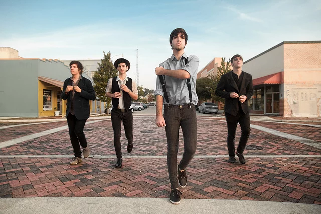

Sobre a Banda
Coyote Theory é uma banda indie-pop de Orlando, Flórida, da Arista/Last Nite Records. Formado em 2010, seus
membros Colby Carpinelli, Grayson Hendren, Jayson Lynn e Domenic Reid alcançaram milhões de fãs com músicas
como o sucesso viral de 2020, “This Side of Paradise”, que despertou uma nova geração de fãs para sua
música.
A banda já se apresentou ao lado de Twenty One Pilots, Sleeping With Sirens, Jack Lawless do DNCE, Greyson
Chance e está indo para o estúdio lançar novas músicas em 2021.

Letra da música
This Side Of Paradise
Coyote Theory
This Side Of Paradise
Ask me why my heart's inside my throat
I've never been in love, I've been alone
Feel like I've been living life asleep
Love so strong, it makes me feel so weak
Are you lonely? (Are you lonely?)
Our fingers dancing where they meet
You seem so lonely (are you lonely?)
I'll be the only dream you seek
So if you're lonely, no need to show me
If you're lonely, come be lonely with me
Lonely (are you lonely?)
Passion is crashing as we speak
You seem so lonely (are you lonely?)
You're the ground my feet won't reach
So if you're lonely, darling, you're glowing
If you're lonely, come be lonely with me
Underneath the pale moonlight
Dreaming of a circus life
Carousels and ferris heights
I'll be yours if you'll be mine
'Cause I'm lonely, I'm so lonely
If you hold me, I'll be your only
Are you lonely? (are you lonely?)
Our fingers dancing where they meet
You seem so lonely (are you lonely?)
I'll be the only dream you seek
So if you're lonely, no need to show me
If you're lonely, come be lonely with me
Are you lonely?
Passion is crashing as we speak
You seem so lonely
You're the ground my feet won't reach
So if you're lonely, darling, you're glowing
If you're lonely, come be lonely with me
Opinião Sobre a Música
Olha, essa eh minha musica favorita por um motivo
Bom, em agosto/setembro de 2020 eu me apaixonei por uma garota, ela era o mais proximo de perfeicao q eu ja
achei, doce, gentil e sempre me fazia rir mesmo quando eu estava triste.
Me declarei pra ela, ela disse que sentia o mesmo (vcs ja sabem oq aconteceu)
Um dia, eu tava conversando com ela por direct e ela me mandou uma edit que ela fez com essa musica, ate
hoje lembro de como era...
Um dia meus pais tomaram o meu celular e começaram a ler todas as minhas conversas com ela, me proibiram de
falar com ela só pelo fato de ela ser uma garota e não um garoto.
Chorei muito, hoje eu me lembro dela, estou sozinha, eu só queria estar sozinha com ela...
Essa musica me faz lembrar dela, escuto quando estou muito mal...
Eu ainda tenho o contato dela mas não conversamos por causa dos meus pais..
Eu ainda tenho esperanças de que eu possa viver com ela, mas por enquanto, somente nos sonhos
- Mellohi Via Youtube